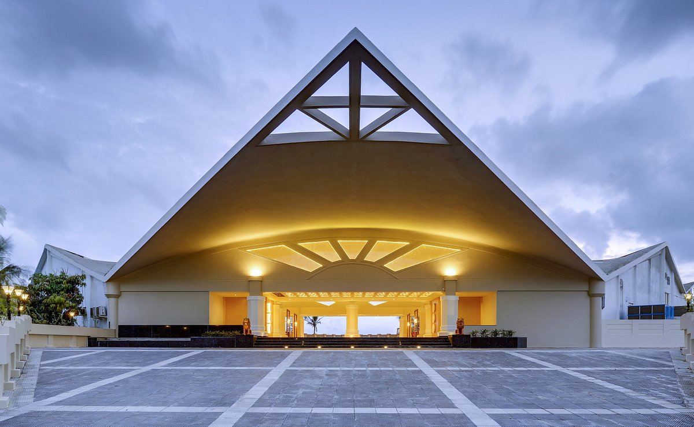
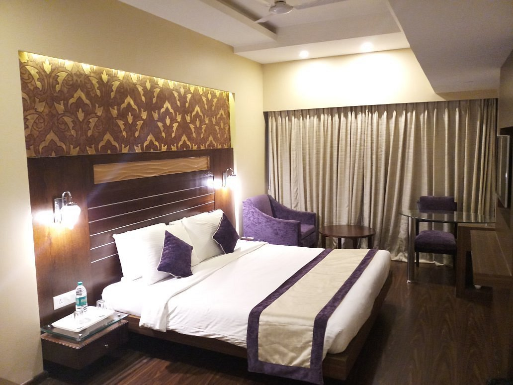
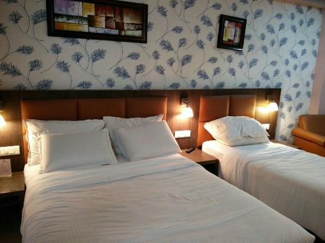
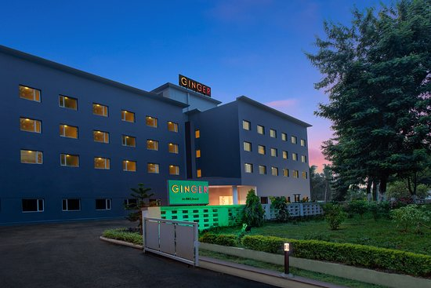

Hotels To Stay
Sterling Puri
Sterling Puri is in an estuary where the river meets the sea & is set in a sprawling 15 acres. Catch the sunrise on the beach or indulge in the spa, swimming pool, or games & activities. Enjoy authentic Odia delicacies in the multi-cuisine restaurant.
With the beach just a stone’s throw away, Sterling Puri is easily the best choice in this city. If you are a morning person, then don’t miss the sunrise on the sea. The renowned Puri Jagannath Temple is not far away from the resort.
Puri is known for its art form called Pattachitra, an intricate painting done on silk and cotton fabric. Fringed by the shimmering blue sea and soft golden sand, this colourful temple town looks like a large Pattachitra.
Sterling Puri has 121 well-appointed rooms, and the beach is just a quick walk away from the resort. The lullaby of the waves will soothe your senses. Spend the day visiting the holy temple, and going on a trail to watch artists working on Pattachitra. You can take a short excursion to the renowned Konark Sun temple and Chilika lake. Don't forget to catch the sand art at the resort. For the adventurer in you, The resort's Holiday Activity Centre offers a variety of experiences like aqua zorbing, paddle boats and so on.
₹6499
Swosti Grand
Swosti Grand is a luxury business hotel situated in Bhubaneswar. Featuring 56 well-appointed rooms with modern facilities and amenities, 4 spacious banquet halls and boardrooms, centrally air-conditioned restaurantsthat serve immaculate cuisines in addition to a pub, a coffee shop and a dedicated cake shop, our hotel is unmatched when it comes to guest satisfaction. We leave no stone unturned when it comes to serving our patrons and their happiness. Conveniently located in Bhubaneswar, just 0.5 km from the railway station, our hotel is simply the best choice for corporate guests arriving in Odisha for an important business meeting or conference.
We provide a simple yet relaxed stay, where everything goes smoothly, just like in a memorable symphony. Every wish of yours is fulfilled, smiling faces greet you with warm hospitality so that stress vanishes and bliss takes over. Swosti Grand has been the epitome of such personalized care and services for the past three decades.

₹5200
Mayfair Lagoon
Being one of the best luxury hotel in Bhubaneswar, Mayfair Lagoon embodies the core values of Eastern hospitality. With its unique designs, architectural style and accent on ecology , Mayfair Lagoon stands apart from its peers in terms of its sheer magnificence, grandeur and aesthetics.
Designed to be of a unique class of its own in the hotel industry, a pristine touch is lent with the enfolding greenery. The graceful aura exuded by its exquisite environs casts a hypnotic spell on the visitor. A stroll down the corridors and a glimpse of gardens at Mayfair Lagoon premises catapults one to experience an exalted sense of joy. All the rooms, suites and villas exude the aura of luxury and elegance. Beautifully decorated to enthrall the guests & provides a royal ambience for the guests. Complimenting suitably to the royal standard of living, the restaurants in Mayfair delight guest with their scrumptious offerings.
Whether one is an aficionado of Indian foods or has a taste for continental, Chinese or Thai-our restaurants treat with the best flavors in each category. MAYFAIR Lagoon Reflects an Ideal Concord of Luxury, Elegance and Contemporary Lifestyle The Spa at Mayfair Lagoon is one of the best in class. Equipped with all latest tools and equipment’s and with expert staff to manage, it caresses your body, mind and soul and provides you a holistic sense of wellbeing.
For event & meetings we have facilities of all specifications. Well-equipped and spacious, one can organize any sort of event in the serene surrounding at Mayfair Lagoon. Here, you can engage in a lot of activities and a wide option to choose from. You have a jogging track for the walk, a yoga centre, a fitness centre to work out and sporting facilities like table tennis, basketball and lawn tennis. You can also spend your time in a pool or unwind yourself in a swimming pool.
₹8176
Pride Ananya Resort
Situated in centrally in Puri, Pride Ananya Resort, is located in close proximity to the Puri Railway Station, Lord Jagannath Temple & Sea Beach. The Pride offers exclusive blend of the traditional hospitality with modern comforts. Select from 80 well-appointed rooms that will make your stay worth a memory. Each of the rooms feature twin/King-size bed, 3 Bedded , 4 Bedded, Tea-Coffee maker, Mini Bar, LED T.V in the room, Complimentary Pandit for Temple Darshan, Free usages of Swimming pool, Free usages of Wi Fi, Business Center, Work Desk at Room.

₹3850
Ginger Bhubaneshwar
Ginger Hotel Bhubaneshwar is one of the finest budget hotels in Bhubaneshwar conveniently located near a plethora of attractions. This 3 star hotel in Bhubaneshwar offers services & facilities like gymnasium, restaurant, Wi-Fi, conference hall & many more. The holy city of Bhubaneshwar is a delight for pilgrims and tourists. Experience this unruffled journey by staying at Ginger Bhubaneshwar offering the best-in-class features, comfort, and safety. Book a room today at great prices and enjoy a comfortable stay at one of the finest branded budget hotels in Bhubaneshwar near Airport and Railway station.

₹2975